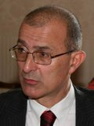
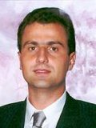
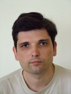

Prof. dr Jovan Đorđević, redovni profesorpredmeti:Osnovi računarske tehnike 1, Osnovi računarske tehnike 2, Arhitektura računara, Arhitektura i organizacija računara 1, Arhitektura i organizacija računara 2, Organizacija računara, Arhitektura i organizacija računara kabinet: 54a e-mail: jdjordjevic@etf.bg.ac.rs |
|
Prof. dr Zoran Jovanović, redovni profesorpredmeti:Konkurentno i distribuirano programiranje, Zaštita podataka, Paralelni računarski sistemi kabinet: 54a e-mail: zoran@rcub.bg.ac.rs |
|
|  |
Prof. dr Veljko Milutinović, redovni profesorpredmeti:Praktikum iz poslovne komunikacije i prezentacije, Infrastruktura za elektronsko poslovanje, Upravljanje softverskim projektima, Mikroprocesorski sistemi, Računarski VLSI sistemi kabinet: 26a, Paviljon "Rašović" e-mail: vm@etf.bg.ac.rs |
Prof. dr Miroslav Bojović, vanredni profesorPredmeti:Baze podataka 1, Baze podataka 2 kabinet: 23, Paviljon "Rašović" e-mail: mbojovic@etf.bg.ac.rs |
|
|  |
Prof. dr Dragan Milićev, vanredni profesorpredmeti:Operativni sistemi 1, Operativni sistemi 2, Programiranje u realnom vremenu, Objektno orijentisano programiranje kabinet: 24, Paviljon "Rašović" e-mail: dmilicev@etf.bg.ac.rs |
Prof. dr Jelica Protić, vanredni profesorpredmeti:Programiranje 1, Programiranje 2, Performanse računarskih sistema kabinet: 18 e-mail: jeca@sezampro.rs |
|
Prof. dr Milo Tomašević, vanredni profesorpredmeti:Programiranje 1, Programiranje 2, Algoritmi i strukture podataka 1, Algoritmi i strukture podataka 2, Multiprocesorski sistemi kabinet: 37 e-mail: mvt@etf.bg.ac.rs |
|
Doc. dr Vladimir Blagojević, docentpredmeti:Informacioni sistemi 1, Informacioni sistemi 2, Softverski alati baza podataka kabinet: 23, Paviljon "Rašović" e-mail: bleki@etf.bg.ac.rs |
|
|  |
Doc. dr Dragan Bojić, docentpredmeti:Testiranje softvera, Principi softverskog inženjerstva, Sistemsko programiranje/Sistemski softver, Programski prevodioci 1, Programski prevodioci 2 kabinet: 23, Paviljon "Rašović" e-mail: bojic@etf.bg.ac.rs |
Doc. dr Boško Nikolić, docentpredmeti:Praktikum iz korišćenja računara, Praktikum iz Osnova računarske tehnike, Veb dizajn, Arhitektura i organizacija računara 2, Ekspertski sistemi, Programiranje Internet aplikacija, Internet programiranje kabinet: 37 e-mail: nbosko@etf.bg.ac.rs |
|
Doc. dr Igor Tartalja, docentpredmeti:Objektno orijentisano programiranje 1, Objektno orijentisano programiranje 2, Projektovanje softvera, Računarska grafika kabinet: 18 e-mail: tartalja@rcub.bg.ac.rs |
|
 |
Doc. dr Slavko Gajin, docentpredmeti:Računarske mreže, Računarske osnove Interneta kabinet: RCUB e-mail: slavko.gajin@rcub.bg.ac.rs |